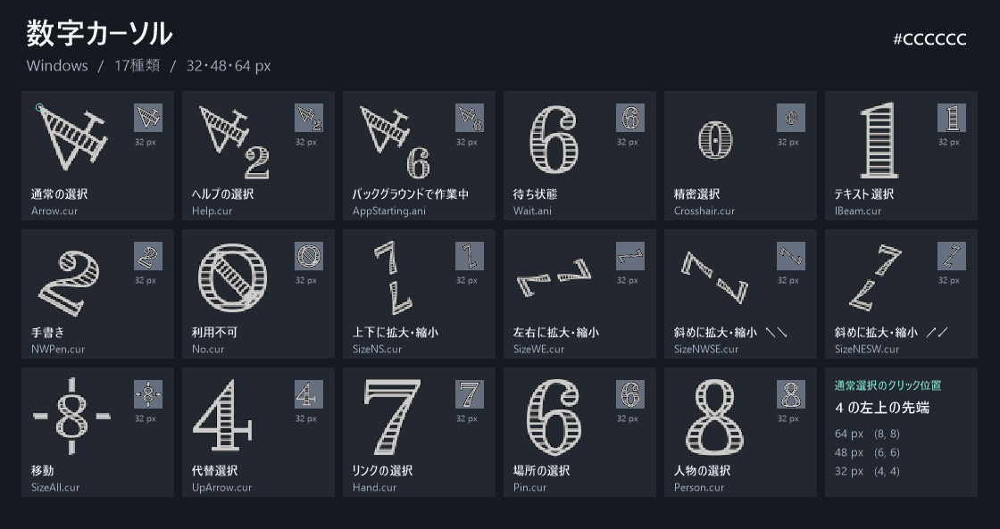

Official download
| File | Version | Release date |
|---|---|---|
| Number Cursors (.zip, 383 KiB) | Ver1.0.0 |
Preview
All cursors use #CCCCCC with transparent backgrounds and include 32, 48, and 64 px sizes. The tilted 4 clicks at its upper-left tip.



Set up in Windows
- Extract the ZIP.
- Press Win + R, open
main.cpl, and select the Pointers tab. - Select a pointer role, choose Browse, and pick its file from the
cursorsfolder. The JapaneseREADME.txtin the ZIP lists the matching files.
Register all 17 cursors as a scheme
Open PowerShell in the extracted folder and run these commands.
Unblock-File -LiteralPath .\Register-Scheme.ps1
powershell.exe -NoProfile -ExecutionPolicy RemoteSigned -File .\Register-Scheme.ps1On the Pointers tab, choose Number Cursors (#CCCCCC) under Scheme and select Apply.